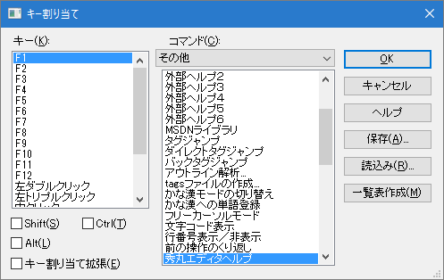

- 他のエディタと同じようなキー操作に出来ないでしょうか？

「その他」→「キー割り当て」ダイアログボックスで可能です。
- [手順]
「その他」→「キー割り当て」ダイアログボックスを表示。

- 「キー」リストボックスと「Ctrl」チェックボックス等をＯＮにするなどしてキー割り当てしたいキーを設定。
- 「コマンド」コンボボックスとリストボックスで割り当てたい命令を選択。
- 「1」〜「3」を必要なだけ繰り返して下さい。
「ＯＫ」ボタンを押して下さい。（これで完了です）
- [解説]
- 自分で設定しなくても、秀丸エディタを他のエディタと同じようにするためのキー割り当てファイル（拡張子が「KEY」のファイル）や マクロファイル（拡張子が「MAC」のファイル）が、公開されている場合もあるので、検索してみましょう。